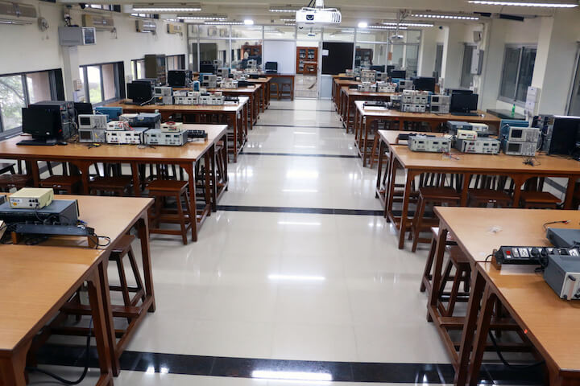

About WEL
What the lab is, who runs it and what happens here - from the 2001 inauguration to the facilities of today.

A laboratory built by an alumnus, for students
Wadhwani Electronics Laboratory was set up in the Department of Electrical Engineering, IIT Bombay with the help of an endowment from Dr. Romesh Wadhwani, a member of the 1969 EE batch, for teaching and project development in electronics. The laboratory was formally inaugurated by Dr. Wadhwani on 12 February 2001.
More than 1,700 students use WEL each year for laboratory courses. The lab has developed several hardware kits used in those courses, and is equipped with the latest series of electronics test instruments — oscilloscopes, function generators, FPGA programmers, digital multimeters and more. Various technical events are hosted every year at WEL, including workshops, competitions, training and outreach, and students and staff working here take part in numerous translational R&D projects.
One of the largest labs at IIT Bombay
WEL is managed by an excellent team of dedicated and highly motivated staff and M.Tech. Research Assistants. Apart from housing laboratory courses for undergraduate and postgraduate students in the Department of Electrical Engineering, WEL also serves as the hub for various student-driven R&D projects.
Meet the teamCourses, events and R&D
On the academic front, WEL caters to more than 10 lab courses with a combined strength of more than 1,700 students per year. Various technical events are hosted every year, including workshops, competitions and internships. Students, RAs and staff working at WEL are also engaged in a range of R&D projects.
How the lab grew
Many of the activities WEL runs had not been possible earlier, at least not on the same scale, because of infrastructural limitations — or sometimes simply because the various electronics activities were physically apart. WEL made it possible to bring almost the entire electronics activity in EE under one umbrella, which also boosted the enthusiasm among students.
WEL currently caters to over 700 students every semester. The lab has a large variety of microprocessor kits, microcontroller boards, CPLD/FPGA boards developed under e-Prayog (an MHRD supported project), cross compilers, assemblers and other utilities for these processors, single-board computers, online EPROM programmers, logic analyzers and in-circuit emulators, for use in microprocessor and other lab courses. WEL also supports experimental instruction and projects in analog and digital circuits and electronics design.
Two major activities started in 2002
Embedded Systems Lab. A specialization called Electronic Systems was introduced for the M.Tech course in the EE Department. The Embedded Systems Lab was set up within WEL to provide laboratory support for this course, and is also made available for other courses in the department and for project work.
Enhancement of the PCB facility. The PCB making facility in the EE department was significantly enhanced in 2002 with the help of a grant from the Department of Science and Technology. The WEL fund partially supported the infrastructure development, since the PCB facility is used heavily for electronics projects carried out in WEL.
New developments from 2010
As part of e-Prayog, Virtual Labs, IIT Bombay — an initiative of the Ministry of Human Resource Development under the National Mission on Education through ICT — the following electronics lab courses were developed at WEL:
- Electronic Devices and Circuits
- Network Analysis
- Linear Integrated Circuits
- Signals and Systems
- Digital Signal Processing using DSK6713, DSK5510 and a low-cost board using TMS320VC33
- Modern Digital Design using CPLD and FPGA
- Microcontrollers
- Image Processing
These are purely simulation-based labs and users are not required to book slots. They are also low-cost kit-based labs — the kits are made available to interested students on request for their basic understanding and projects.